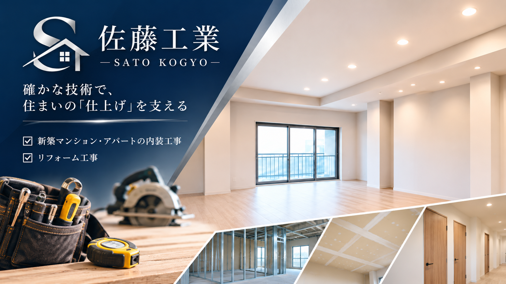

OUR WORK
新築マンション・アパートの内装工事・リフォーム
千葉県を中心とした現場で、長く協力し合える関係を築いていきたいと考えています。経験年数だけでなく、これまでの仕事内容も伺います。

仕事内容新築マンション・アパートの内装工事・リフォーム
募集対象多少の大工経験がある一人親方
現場千葉県内を中心に（詳細応相談）
協力形態継続的な業務協力
報酬・条件案件ごとに個別相談
CONTACT
協力大工のご相談・お問い合わせ
「まずは話だけ聞きたい」という方も歓迎します。ご都合のよい方法でご連絡ください。
問い合わせ内容をまとめたい方へ（任意）
下の項目を入力すると、メールに使える文章を作れます。このフォームからは自動送信されません。 作成後に文章をコピーし、メールでお送りください。